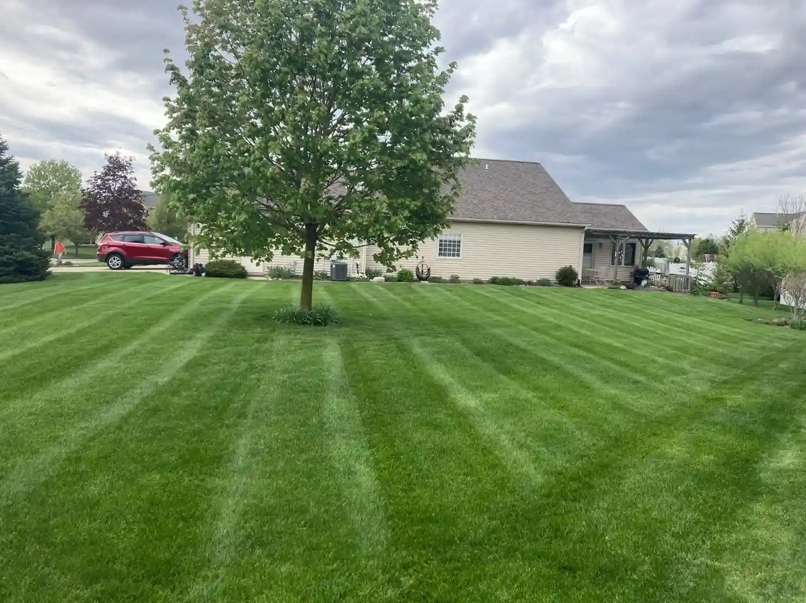
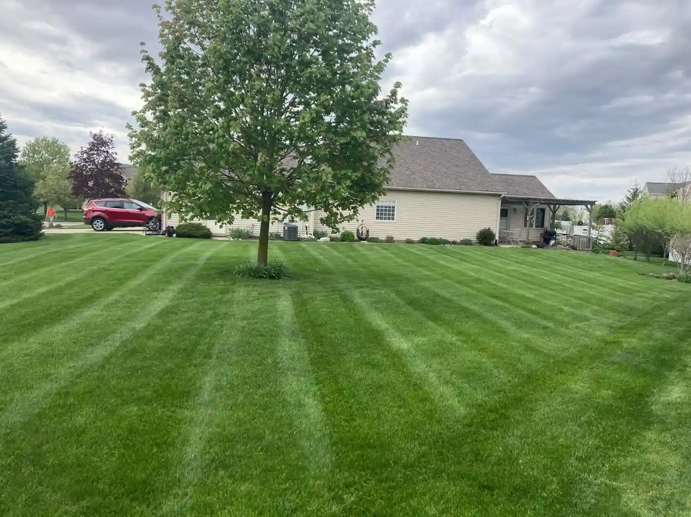

How can we help?
Effective communication is vital for our lawn care company to ensure that our clients receive the best possible service. If you have any questions or wish to use our services, please contact us below.
Email: sniderlandscape@gmail.com
Phone: (260)-450-5799
Address: 3015 Flaugh Rd, Fort Wayne, IN 46818, United States
Areas We Serve: Fort Wayne, Indiana